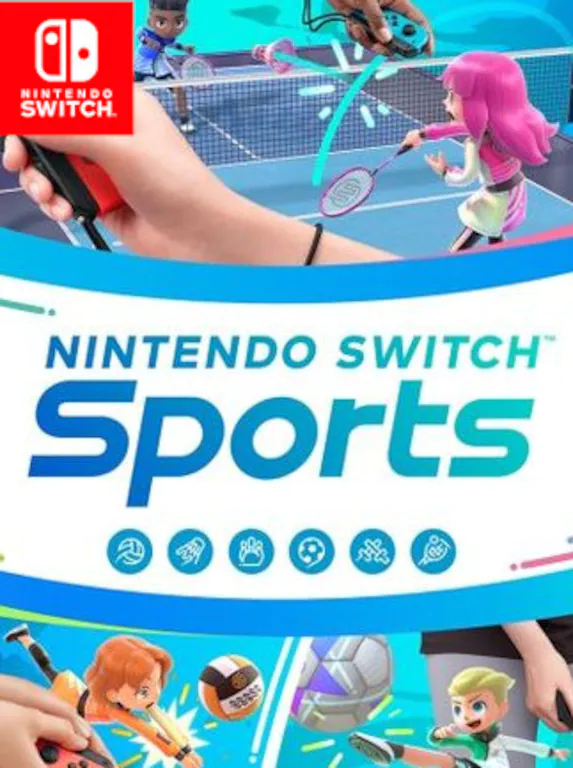

 Disponible para nintendo.
Disponible para nintendo.- Compra el juego de Nintendo Switch Sports y logra la victoria con raquetazos, patadas y remates, una colección de distintos deportes para Nintendo Switch, de los que podrás disfrutar de manera muy realista.
Disfruta de seis deportes, incluidos voleibol, fútbol y bolos. Los movimientos que hagas en el mundo real se reproducirán dentro del juego.
- Precio para ps: 44.99 €